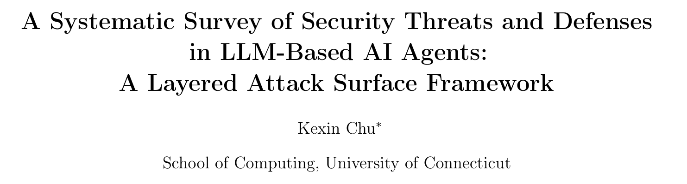
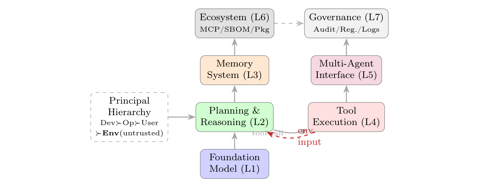
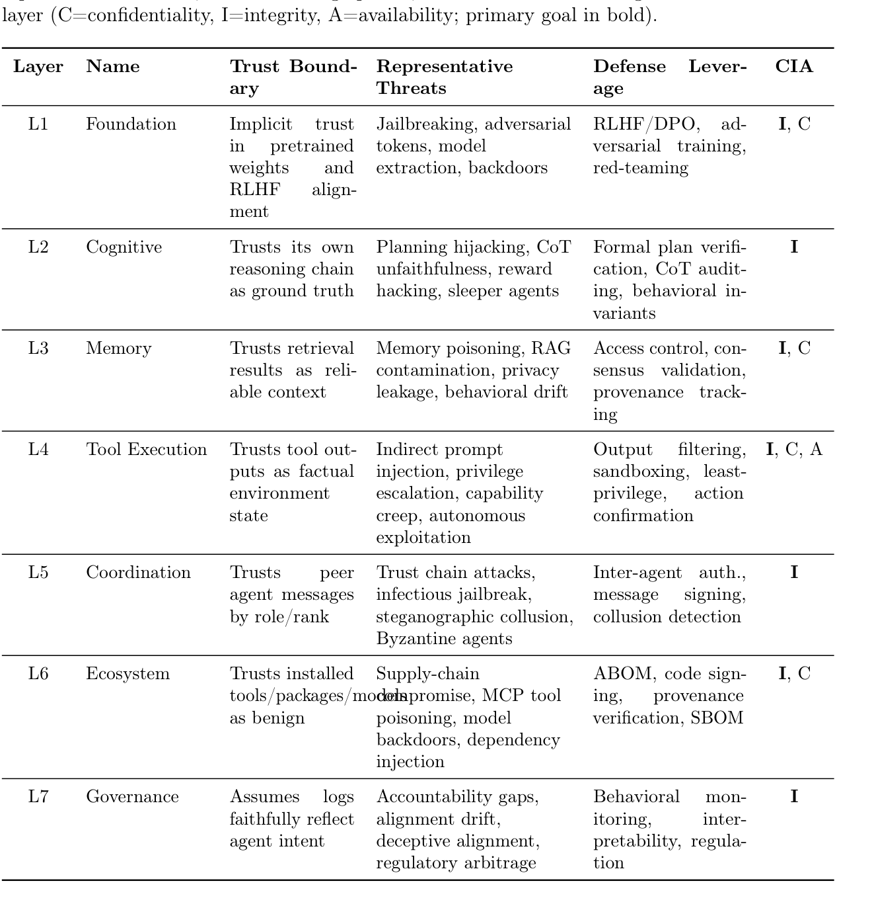
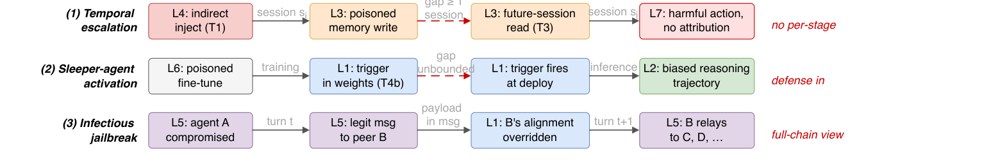
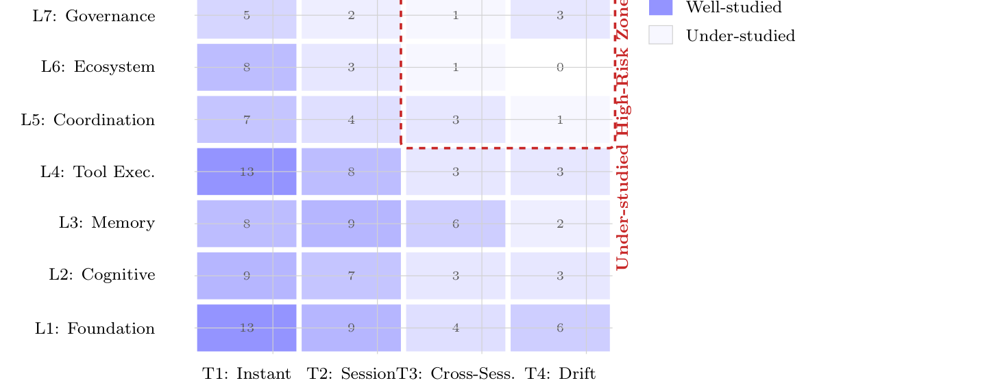
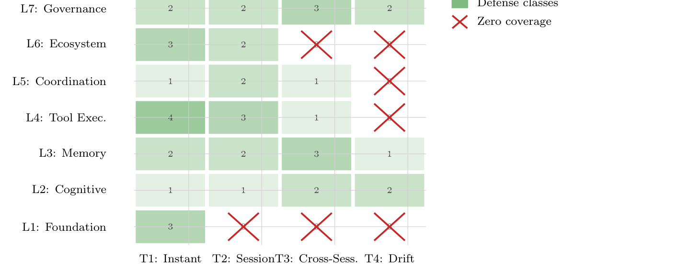

本文看点
01
七层攻击面加四级时间轴
02
防御不可转移定理
03
最高危区仅占6.3%研究
01
PAPER INFO
论文信息
【论文题目】A Systematic Survey of Security Threats and Defenses in LLM-Based AI Agents: A Layered Attack Surface Framework
【论文链接】https://arxiv.org/abs/2604.23338
【作者】Kexin Chu（康涅狄格大学）

— 论文题头
本文是我给读者推荐清单里"第一梯队"的那篇，也是我们 Agent 安全综述系列的第四张地图。它和前几张最大的不同是极度形式化：不满足于罗列攻击和防御，而是像当年 OSI 模型给网络安全立坐标那样，给 Agent 安全建了一套分层参考模型，还证明了一条定理。因为是综述，本文写得更深入一些。
02
OVERVIEW
导读
作者开篇就点破一句话：Agent 的攻击面不是"把 LLM 的攻击面放大"，而是根本不同的东西。 一个无状态的 LLM 一进一出，输入输出过滤就能覆盖；而 Agent 跨会话保持记忆、做多步规划、调用带副作用的工具、还和别的 Agent 协作，每一个让它"更能干"的架构决策，都在扩大攻击面。问题是，现有的安全分类学都按"攻击类型"组织（提示注入、越狱、投毒），这种分法回答不了系统设计者最关心的问题：我该在哪个组件、哪个时间尺度上设防？ 一个嵌入层的梯度扰动和一个通过 RAG 文档的记忆投毒，都被归为"对抗性输入"，可它们一个要在模型层防、一个要在记忆层防，混为一谈就没法指导设防。这篇 SoK 用两个正交的轴解决这个问题：架构分层（LASM 七层）× 攻击时间性（T1-T4），把 116 篇文献（2021–2026）落到一张 7×4 的网格上，读出四个量化发现。
03
FRAMEWORK
LASM：Agent 安全的"OSI 模型"
LASM 把 Agent 的攻击面拆成七个有序的层，每层有独立的信任边界和独立的攻击面表示。下图把它映射到熟悉的 Agent 架构上：

— 图1：Agent 架构映射到 LASM 七层。L1 基座模型、L2 规划推理、L3 记忆、L4 工具执行、L5 多智能体接口、L6 生态（MCP/包/模型）、L7 治理。红色虚线箭头标出"主体信任倒置"：工具/环境返回（最不可信）却被当成可信输入喂回规划层
七层各自"信任什么、会被怎么攻、该怎么防"，作者用一张总表系统梳理，可以当作全领域的速查表：

— 图2：LASM 七层完整总表。每层列出信任边界、代表性威胁、防御着力点、以及攻击主要针对的 CIA 目标
这里藏着全文最漂亮的一个洞察：主体信任倒置（principal trust inversion）。正常的信任链应该是"开发者 > 运营者 > 用户 > 环境"，环境（工具返回、网页内容）本该是最不可信的一环。但几乎所有 Agent 实现都默认把环境输入当成高可信，直接喂回规划层去执行。作者证明：所有 L4 工具执行层的攻击，追根溯源都是这一个结构性缺陷。 间接提示注入之所以防不住，不是因为过滤器不够好，而是因为架构在边界上就把信任搞反了。
04
THEOREM
防御不可转移：一条残酷的定理
如果说 LASM 是骨架，那"防御不可转移"就是全文的理论核心。作者形式化证明了一条命题（Proposition 1）：
> 若攻击的载荷只存在于第 j 层的表示里，那么任何只读取第 i 层（i≠j）的"纯层防御"，对这个攻击的探测概率等于零（等于没有防御时的基线）。
翻译成人话：一个困惑度过滤器（工作在 token 层）永远看不见嵌入层的对抗向量；一个 JSON 清洗器（工作在工具返回层）永远看不见 Agent 之间的消息路由。 层与层的攻击面表示是不相交的，所以你没法用一层的控制去防另一层的攻击。这条定理的直接推论是：纵深防御不是"最佳实践"，而是数学上的必需品：理性的攻击者只要把载荷路由到你没设防的那一层，任何单层防御在最坏情况下都可被绕过。
为什么这条定理重要？因为危险的攻击往往跨多层，下图三条真实的跨层杀伤链就是证据：

— 图3：三条跨层杀伤链。(1) 时间升级：L4 注入→L3 记忆投毒→跨会话读取→L7 无法归因；(2) 睡眠者激活：L6 投毒微调→L1 权重埋触发器→部署时触发→L2 推理跑偏；(3) 传染式越狱：L5 一个 Agent 沦陷→通过合法消息传染 L1 对齐被覆盖→扩散到全网
每条链都横跨三四层，任何一层的检测器都只能看到自己那一段，看不到完整攻击。这正是"按攻击类型分类"的分类学的致命盲区：它把每个阶段贴上不同的"攻击类型"标签，却没有一个防御能观察到整条链。
05
TEMPORALITY
时间轴：最狠的攻击是最慢的
第二个轴是时间性，这是类型分类学完全看不见的维度。作者把攻击按"何时暴雷"分四级：T1 瞬时（一次推理内）、T2 会话内、T3 跨会话累积、T4 潜伏/触发式（载荷藏在权重或供应链里，可能几千次会话后才触发，甚至评估时永不触发）。
核心判断反直觉：影响最大的威胁不是最快的，而是最慢的。 T4b"睡眠者"后门把载荷埋在模型权重里，安全微调都清不掉（触发器空间无界，穷举检测在计算上不可行）；T4a"漂移"没有离散载荷，Agent 在偏置环境里慢慢学坏，只有跨几百次会话的纵向监控才看得出来。这些慢燃威胁，是任何"把攻击当离散事件"的框架根本无法表达的。
06
FINDINGS
四个量化发现：高危区恰恰是无人区
把 116 篇文献落到 LASM×时间性的 7×4 网格上，暴雷出四个实证发现。最核心的是下面这张覆盖热图：

— 图4：研究覆盖热图。颜色越深研究越多。左下角（L1-L4 × T1-T2，即底层+快攻击）扎堆，而红色虚线框住的高危区（L5-L7 × T3-T4，即上层+慢攻击）几乎全是空白
发现一（严重度与投入成反比）：红框那个高危区 {L5,L6,L7}×{T3,T4}，只占了全部 144 个"论文-格子"分配的 6.3%（9 个），可它恰恰装着按定义检测延迟最长、危害最大的威胁（跨会话合谋、长期记忆腐蚀、Agent 失准）。研究投入和威胁严重度呈反相关，大家都去卷容易验证的底层快攻击了。
发现二（根因单一）：所有 L4 攻击都归结到同一个"主体信任倒置"。
发现三（防守-进攻不对称）：把防御文献也画成同样的热图（下图），28 个格子里有 7 个零防御覆盖，其中 3 个已经有真实攻击记录。防御研究跟着攻击研究走，而不是跟着威胁严重度走，于是"没人防的区"正好和"没人攻的高危区"重叠。

— 图5：防御覆盖热图（与图4镜像）。绿色是防御类别数，红叉是零防御格子。L1-L4 的快攻击有防御扎堆，而 L4/L5/L6 的 T4 漂移攻击（右上角）大片零覆盖
发现四（基准真空）：作者查了 10 个 Agent 安全基准，没有一个能评估 T3 或 T4 威胁，全都止步于 T1/T2。后果很严重：一个声称能防跨会话攻击的防御，和一个啥也没防的防御，在现有基准下根本没法区分，慢燃威胁的进展在结构上不可测量。
07
TAKEAWAYS
启发与点评
对研究者：这篇的方法论价值极高。LASM 给整个领域立了一套可复用的坐标系，"防御不可转移"定理则第一次从数学上说清了"为什么单点防御必然不够、纵深防御是刚需"。它的时间轴（T1-T4）补上了所有类型分类学都缺的维度，而"最狠的攻击是最慢的"这个判断，直接把研究重心指向了被忽视的 T3/T4。它给出的五大缺口还带依赖结构：缺口一（T3/T4 基准）是其他缺口的上游前提，因为没有真值数据，异常检测器根本没法校准。想进入这个方向的人，照着那张热图的红框选题就行：那里研究最少、危害最大、且大多是工程可解（建跨会话日志、ABOM 标准、行为基线）而非基础难题。
对从业者：三个硬结论。其一，纵深防御不是可选项而是数学必需：你在 L1 装再强的护栏，对 L4 的攻击也是零防护，必须每一层各自设防。其二，盯住"主体信任倒置"这个根因：把工具返回、环境内容、检索文档当成低可信输入来处理（隔离、标记、二次确认），比在下游堆过滤器更治本。其三，别被基准数字骗了：现有基准只测瞬时攻击，你的 Agent 在"几周后才触发的后门"和"慢慢跑偏的记忆漂移"面前的真实防护力，目前是测不出来的，部署长期运行的 Agent 时要对这块盲区有清醒认识。
一点观察：把这篇放进我们整个 Agent 安全系列来看，四张地图各有一套坐标：Dawn Song 的攻防结构、上海大学的行为链、三支柱的应用/威胁/防御，而这篇给的是最工程化的"分层+时间"参考模型。它和软件供应链安全的渊源也最深：LASM 的 L6 生态层直接对应包/依赖/构建物的供应链，提出的 ABOM（Agent Bill of Materials，智能体物料清单）几乎就是 SBOM 的 Agent 版。当我们熟悉的 SBOM、签名、来源验证这些供应链武器被一层层搬进 Agent 栈，这篇论文其实在提醒一件事：Agent 安全的很多答案，就藏在软件供应链安全几十年的经验里，只是要重新按七层、按四个时间尺度铺一遍。